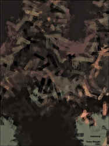
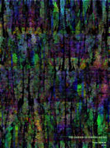
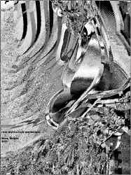
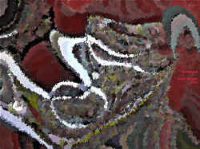
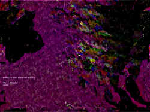
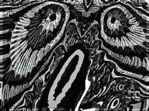

Terry
Wright
Episodes
Luck
of the draw they
say. Poker hand
blew up like C2,
a sunburst
made the house full.
Nothing
up my sleeves but
zip guns.
*
Turtles and Autos
I find a cracked
shell that fell off
the interstate overpass.
I pick it up, listen.
I hear the sea waxing my car.
*
The Day the Sky Fell
Chicken Little chuckled
and said
Pay up
but we blew him off
and went to the fallout
shelter and let him play
Atlas
while he gloated.
*
Ripped Paws and Indigestion
In the witch's sewing
basket black cats cough up
hairballs that look
like lumps of yarn.
*
Chance Encounter
I saw you at lunch today
with a much younger man.
*
How Can I Ease the Pain?
Apply a cold compress
to the shotgun wound
then call 911. Hop
in the dryer with a
fabric softener sheet
and spin
until all your blood clots.
*
Eclipse Party
Frosting gets hot and red
as the partial carves light.
Birthday candle shadows later
cut life in half..
*
Monolithic Lingerie
was the word on
Pee Wee's Playhouse today
and when everyone screamed
he or she turned into giant
sexy dominoes.
*
When Nutmeg Was God
Dill was sour and so jealous
he murdered Rosemary and Thyme
until Paul Simon wrote an African
song about skinheads and spikeheads
slamming on an ever evolving rock.
*
Possum O Possum
dead on the road,
flat as a quarter,
ranker than a septic tank.
The tire tread becomes you
like a designer label
nature never intended.
*
Litter as a Relic
Jesus rolls the rock back
and sees in blinding Easter light
trash along the parade route.
*
Icarus
fell down
but oh that tan.
*
What a Day
said the Cyclops
after a night sky full of
one star.
*
Blacklist
We have never ever
heard of you.
*
Crop Dust
Smoke settles
like darkness thick
over the promised land.
This plague sucks
think twenty thousand
dead dragonflies.
*
Fishstick Kick
A frozen log
rolled in brown crumbs
falls on the floor.
Not even the cat will
eat it.
*
Satan's Bedside
manner is kindly. As
a family doctor
he's very red
and only makes housecalls
when I cry out his name.
He says I have
travel plans, will
burn with a fever for-
ever and advises I chant
my prescription backwards.
*
New Orleans Exodus
From a Chinese
take out lot I see cars
on the freeway
flee the city,
a blurred
trans-
fusion of light.
*
Macho Scherzo
Annie's barstool's
a red gyro and with no sax
this joint be weirdass otherwise.
Whoa I got
ball bearings on my heels
for only you baby and for all this talk
of little deaths I ain't blind.
*
I Heard the Learned Astronomer Say
that stars are black
holes sucking nothing
but the broken
Hubble telescope can't
even see my hometown
winking
out.
*
China
must be
so sad.
*
Pop Quiz
Well, here's his brain
says the neurosurgeon
to the advanced operating
class. Now,
you put it back.
*
Another Ending for Aliens
My name's Ripley, Newt.
Yes, monsters do exist,
little one, and I bet
you'd look good as
intergalactic tenderloin.
*
Gilligan
ain't my little buddy
so the next time
I'm marooned on
some tropical sitcom
with Tina Louise you
can bet your coconut
there will be a
sailor hat in
my first mate stew.
*
Starchild and His Fearless Bop Gun in a Z-Rated Double Feature
is no longer
on the fall schedule.
*
My Sunrise
can beat up yours.
*
Order Out Tonight
The smeared logo
on a pizza
delivery van whizzes
in a blur by
the back windows
of my stalled ambulance.
*
|
Poetry as Aerobics
one two
one two
one two
Now rest your eyes.
*
Chuck's Pez Dispenser
has the totem head of
Jeffrey Dauhmer stuck
on a plastic stick and
when the candy comes out
it's smooth and white
as many tiny boiled skulls.
*
Carpet
Flying over Baghdad
is so cool
until I glimpse
an intricate Persian floral design
unraveling.
*
The Flat Earth Society
until recently in suspended
animation has new theories
like suspension bridges across
the hellsmouth where a black
cactus grows softly sharp
in the dried lava. The sky
is as bright as the dull side
of aluminum foil on the morning
all of us who are left go over.
*
Bad Seed Pets
Fido foams and
is a psycho.
Fluffy prefers crack to
stale Tender Vittles.
Even Goldie
the fish flipped me
off with a fin.
*
Flippers
cheap from Wal-Mart
fall off
just as the shark
hears the red buoy
sound
the dinner bell.
*
Madonna Leaves Her Clothes On
and I
so slowly came to see
she has
a lovely voice.
*
Spam
a strange red substance,
neither chicken nor burger,
what the hell are you?
*
Benefit for a Wall-Eyed Woman
won't be much of a roast
even if it will seem fishy
but that stupid talking bass over
your mantle won't shut up.
Get the hook out.
Use it.
*
Epiphany in the Adult Bookstore
Well no wonder that hurts
thinks a sleepy man with
tattoos on her penis.
*
The Golden Dew
How many
times do we have
to tell
King Midas
to stop
that god
damn skydiving?
*
Lost
Hansel and Gretal
do not go home.
After the witch is cooked
they move
into the candy condo
and once the roof and walls digest
she lets her brother out.
*
Meatloaf Again
says Joey to
the cafeteria lady
who removes her hairnet
and strangles him
with it. Now we'll
have something new
tomorrow she titters
before reordering industrial
drums of barbeque sauce.
*
Pork for Turks
After a tiring
calorie burning
battle those scimitars
can carve
a mean rump roast.
*
The Tearstained Letter
arrived at my house by
mistake. It said
you loved me more
than your
least favorite TV
show. When I told
the mailman about
the error he cried
some more on it
until the Elvis stamp
curled its lip.
*
Tap Dancing Under the Stars with My Constitutional Right to Own a
Handgun
May I cut in?
I ask before
I blow
the butt off Jill's
frat boy prom date.
Now he can sit
out but not down.
Oh stars are so
romantic lit
by muzzle flash
*
Homosexual Klingons
don't need logic
to kill one another
over who gets to keep
the Bette Midler CD.
*
Silver Tears
are falling from
the floor of the New York
Stock Exchange. All the gold
in my teeth is
prepped for extraction.
Spit commands my
sadistic stockbroker.
*
Hippo Tunnel of Love
is cheap
since you don't need
a boat
to float
in a wet dark
esophagus.
*
Whiplash
feels better in cars
than in a bed.
My mistress drives
her toys at crash test speed.
Who will wrap the leather
around steering wheels?
cover me with a sheet
after an accident
with some apparatus?
*
A Little Nocturnal Advice
Bats are bad. Dive
bomb the hair when moon-
lit. Wear a hat
and a crucifix, scarves
too. Dangle garlic. Best
bet is on stakes. Always
cut the head off.
*
Vampire Opera
Just like biting your neck
in frantic singing
Priceless
Servile
but does your lover?
*
Halloween
My mask
hurts my face and you terrify me.
*
Author's Note:
I have kept a small blackboard in my study for many
years. The blackboard limited the space into
which the poems could be squeezed. I wanted to see
how compressed the poems could get and still function
as poems. "Episodes" is a collection of
these "blackboard poems." Some of these
poems have previously appeared in the following magazines:
Lilliput Review, Rolling Stone, The Windless Orchard,and Without Halos.
|
Fractal Gallery

Twister
Unborn Trail of Tears

The Garden of Forking Paths

Our Invitation Answered
Not Ready to Crash

Pompous

Practicing Pick-up Lines

Surprise
|
 ‚Üê Back to MarckBeggs.com | Arkansas Literary Forum archive, preserved as originally published
‚Üê Back to MarckBeggs.com | Arkansas Literary Forum archive, preserved as originally published{kind=link}
{kind=link}
{kind=link}
{kind=link}
{kind=link}
{kind=link}
{kind=link}
{kind=link}